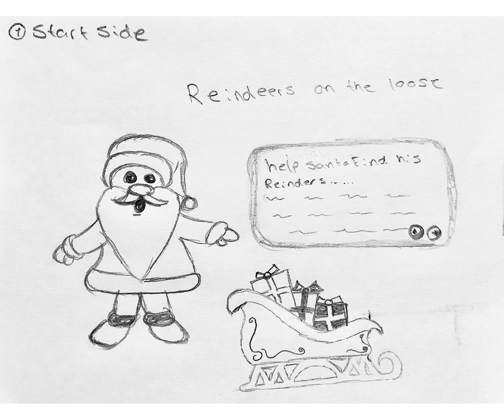
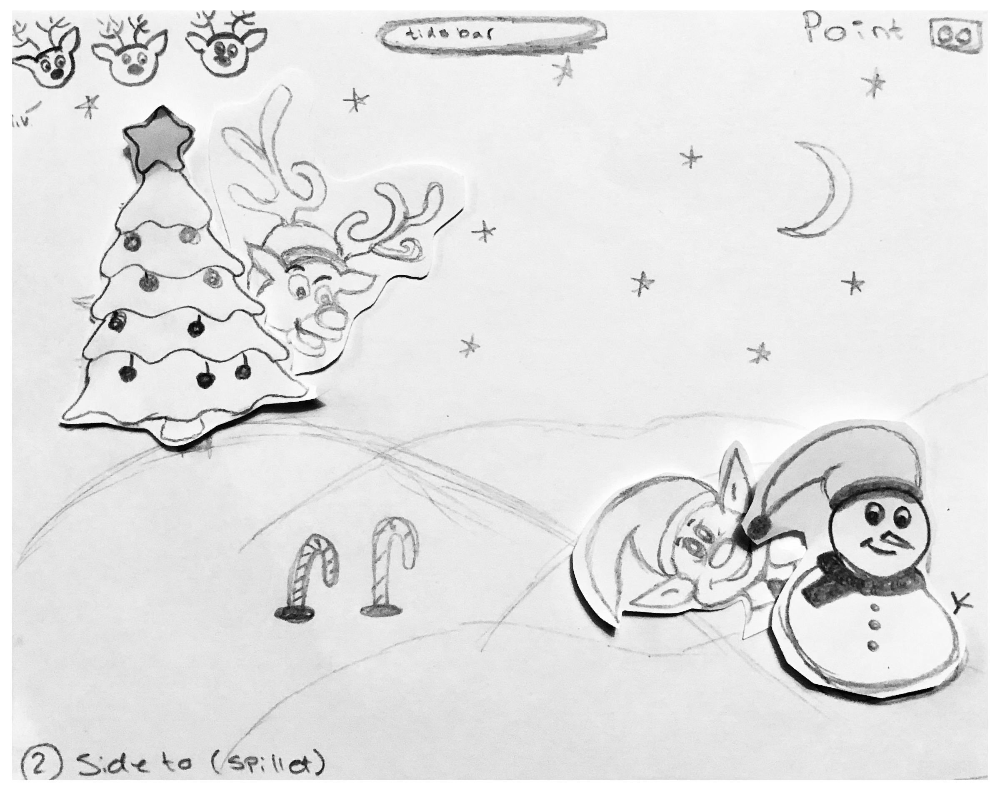
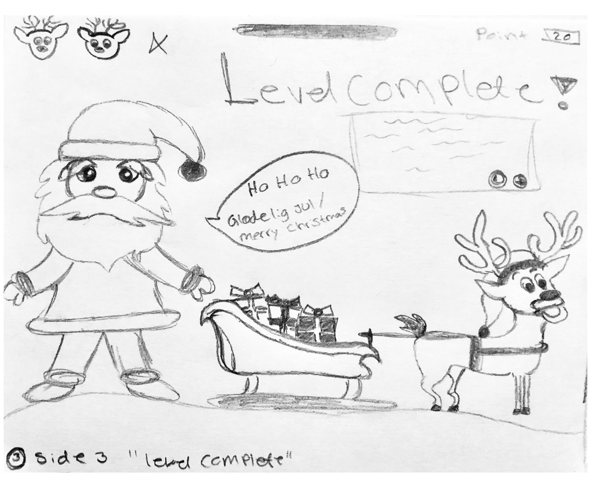
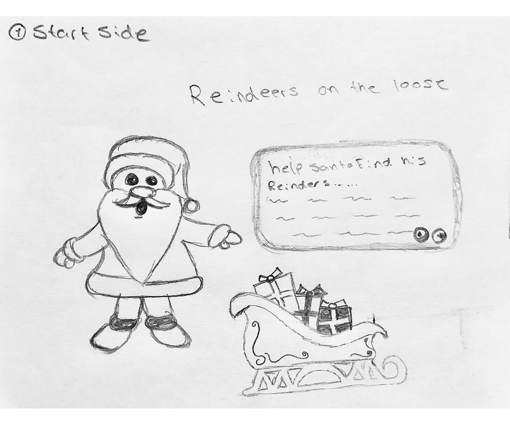
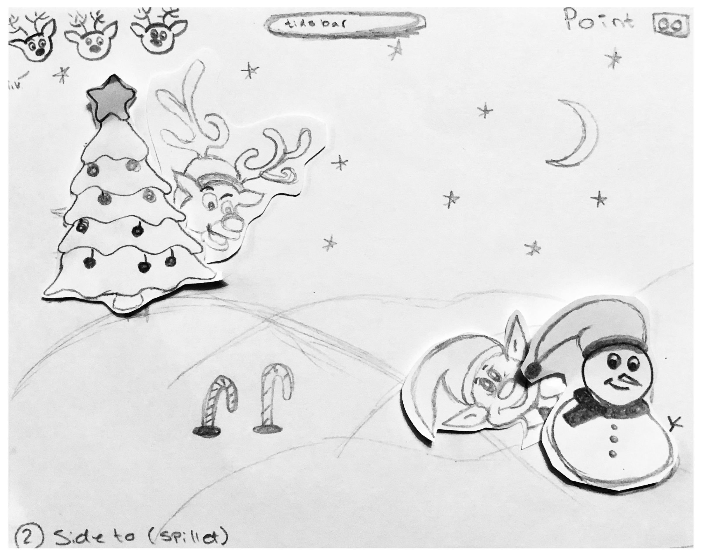
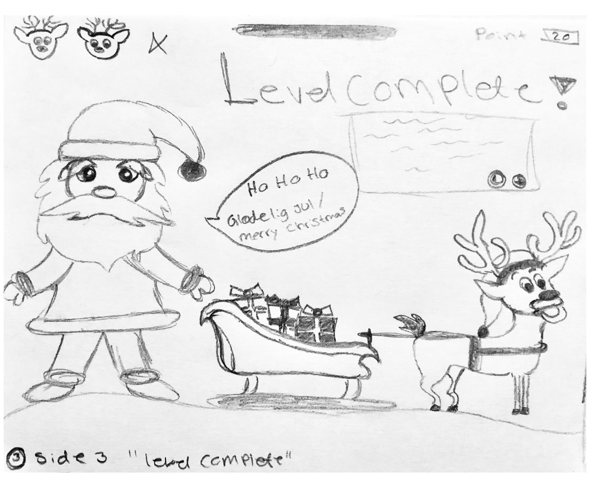

Tema 04
Grundlæggende animation
Dette Tema havde to cases som til sidst skulle bunde ud i et individuelt spil udarbejdet i JavaScript, HTML og CSS. Dette var en anden måde at lære at fremstille interaktive brugerflader. Dette tema forløb sig over 4 uger.
- Assetliste/design dokument
- Individuelt spil
Jeg udarbejdet et spil ved navn Reindeers on the loose” som er et julespil der handler om at julemanden har pakket kanen og er klar til at aflevere pakkerne. Men det visser sig at drillenisserne har været på spil. De har nemlig sluppet rensdyrene løs. Julemanden har derfor brug for din hjælp til at hente rensdyrende hjem igen og vigtigst af alle Rudolph. Så han kan flyver afsted ud og aflever sine pakker før solopgang.
Assetliste
Processen
Til udarbejdelsen af mit spil startet jeg ud med en brainstorm over en masse ideer til spil. Jeg ente med et julespil som kom af at vi nærmede os julemåneden og jeg selv er stor fan af julen, derfor var det oplagt at udarbejde et julespil. Da jeg var blevet afklaret omkring mit julespil udarbejdet jeg en paper prototype som er en hurtigere måde at teste ens ide for spil på.
 





Ide til mit design udarbejdet jeg i et moodboard her fik jeg nspiration fra bl.a. tegnefilm og spil, som havde de lidt mere runde former og var det look jeg søgte for mine spil elementer. Jeg ønskede samtidige at den stil mit spil skulle være flat design, som rigtig giver et computerspil look.
Rentegning i illustrator
Efter udarbejdelse af paper prototypen og moodboard skulle jeg rentegne grafikken i Adobe Illustrator. Vi skulle udarbejde figur elementer, spil elementer, UI-elementer, baggrundsdesign, typografi, farver og komposition. Her endte jeg med et meget detaljeret baggrunddesign og nogle mindre detaljeret spil elementer, da jeg ønskede at holde det til stilen arten flat-design. Jeg prøvet samtidig at give mine spil-elementerne noget personlighed. Drillenissen, som er den frække fik et skævt smil og løftet øjenbryn. Hvor Rudolph og rensdyrende fik et sødt og uskyldigt ansigtsudtryk, med et glimt i øjet.
Spil elementer
Neden for ses spillets spil elementer. Først ses drillenissen som jeg har prøvet at give et frækt ansigts udtryk, med et skævt smil og løftet øjenbryn. Derefter ses Rensdyret og Rudolph som næsten er identiske udover Rudolphs røde næse. De har begge fået et sødt og uskyldigt ansigtsudtryk, med et glimt i øjet. Ved klik på drillenissen mistes der et liv. Ved klik på Rudolph der fås 2 point og ved klik af Rensdyret der gives 1 point.
Aktivitets – og statemachine diagram
For at gøre kode processen nemmer skulle jeg udarbejde et aktivitetsdiagram samt et statemachine diagram som bliver brugt til at planlægge et mere komplicerede interaktiv flow.
Aktivitetsdiagrammet viser spillets struktur og historien bag. Jeg startet med at vil lave et spil hvor elementerne skulle løbe henover skærme det valgte jeg at ændre til at spillets elementer skulle poppe op bag de forskellige elementer i spillet, da det give en følelse af at de gemte sig.
Statemachine diagrammet, hvis spillet struktur og opbygning i JavaScript.
Indspilning af lyd
Spillet skulle have baggrundsmusik, samt spillets UI – og spil elementer skulle indeholde selvindspillet lyde. Her lærte jeg at arbejde i programmet Audition f.eks. hvordan man fjernet eller minimeret baggrundsstøj fra en lydoptagelse
Feedback
Den feedback jeg modtog udfra min survey og underviser måtte jeg fortage nogle små ændringer. Jeg valgte bl.a. at gøre spillet hurtigere, da spillet var fornemt. Derefter indsat jeg nogle animationer på start, gameover og vinderskærm. Det gjorde jeg, fordi jeg fik af vide at spillet mangle noget liv på skærmmende. Havde jeg haft mere tid kunne jeg også have udarbejde nogle animationer på selve bagrunden på spilleskærmen. f.eks. blinkene stjerne eller andet som skabet mere liv.